Playing iLarn
note - screenshots are from an older version
note - screenshots are from an older version
Hopefully you're familiar with rogue-like games already. They are text-based games which have a familiar premise --- wander around in a dungeon, collect treasure, beat up bad-tempered critters, try to finish a quest.
For hard-core keyboard users, there is now documentation on keyboard shortcuts so you do not have to reach up and tap the screen so often. All keyboard shortcuts can also be used as graffiti if the fancy takes you.
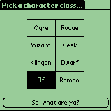
When you start the application you will be asked to select a character class. Some are stronger or more nimble, others are better at casting spells, etc.
![[town screen]](../images/iLarn/2town.gif)
Then you will see a screen split into three parts. The top part will display brief messages (e.g. "you hit", "the kobold misses"); longer messages will "pop up" over the bottom part of the screen, and tapping anywhere will disperse them. The middle part represents a part of the level you're on. The bottom part contains your status information.
(Fairly self-explanatory. The message window is cleared when you move.)
The idea is that you're wandering around looking for a specific potion which will cure your sick daughter. You are represented by an at-sign "@". You start out in the town, which has various buildings ($, S, +, =, H, L) and a dungeon entrance (E); there is also a second and nastier dungeon (V) that you should avoid until you have completed the first. To enter one of these locations, just move on top of it. (I will explain how to move in the next section.)
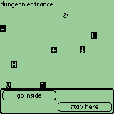
When you are in the dungeon, tiles you haven't mapped yet are represented as ",". Walls are "#". You will start out at the southern end of the first dungeon level and can return to the town through the passage to your south.
![[dungeon screen]](../images/iLarn/4level1.gif)
Things that you might see include scrolls "?" you can read, potions "!" you can quaff, weapons "(" you can wield, rings "|" which confer useful benefits when carried, and armor "[" you can wear or take off. These are all objects you can pick up and carry around.
Note that rings, amulets, and similar beneficial trinkets will bestow their effects just by being carried in your inventory. There is no command (and no need!) to wear them.
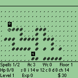
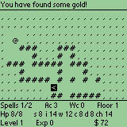
![[a scroll]](../images/iLarn/6potion1.gif)
![[a scroll]](../images/iLarn/6potion2.gif)
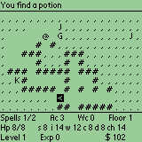
Some objects that you will encounter cannot be picked up, such as mirrors, thrones, fountains, and statues.
To descend to the next level, you will have to find a staircase "%". When you return to this level, everything will be just as you have left it.
From time to time you may run into a trap "^". There are various kinds of traps, but I'll let you find out about them on your own.
There are also monsters, represented by letters of the alphabet. Some may be asleep or unaware of your presence. When awake and aware of you, they are mostly pretty crabby and will probably try to kill you.
Your goal is to find the potion of cure dianthroritis, which looks the same as any other potion but is rather better guarded. You must return to your home with it in order to cure your daughter.
Your secondary goals are to get experience by killing monsters (which will make you tougher to kill), and get money "*" (which will give you a higher score when you die or win.)
Hp 12(12): Your current and maximum hit points - how far you are from being dead. Your maximum hit points will go up as you advance in experience. Your current hit points will, you hope, stay above 0.
Ac 3: This is your armor class - how hard you are to hit. Higher is better, as you will see if you take off your currently worn armor (you do that via a Commands menu item.)
Wc 3: This is your weapon class - how much monsters hurt when you hit 'em. Higher is better, as you will see if you drop or unwield your currently wielded weapon (you do that via the Inventory screen.)
Floor 1: This is the floor of the dungeon you're currently on - how far you are from the surface. The town is H (zero), you enter the dungeon on 1, descend via stairs to 2, etc.
Spells 1/1: Casting spells uses up your current spell points (on the left), which are recovered slowly up to the maximum (on the right).
s 8 i 12 w 8 c 10 d 14 ch 6: Your ability scores (strength, intelligence, wisdom, constitution, dexterity, charisma). There are things that will raise these, and things that will lower them. Higher is better.
Level 1 Exp 0: This is your current experience. The first number is your experience level. The second number represents your experience points, which you get more of when you kill nasty things.
$0: This is how much money you have. It is useful for buying things and services, and if you have more of it when you die, you are ranked higher on the top-ten list.
(If you have played iRogue, you can skip this section, since movement in iLarn is similar.)
First, imagine that the screen is a compass. At the top of the screen is north. Imagine that this compass is divided like a pie into eight slices: N, NE, E, SE, S, SW, W, NW. The slices meet in the center of the screen. Tap within a slice, and that is the direction you will move in. (If you have the "relative move" preference enabled, the center of the pie is at your "@"; otherwise the pie is centered on the screen regardless of where the "@" is located. The rest of these instructions will assume the latter.)
[insert image here]
Ok. You got the pie? I am going to complicate it now. If you tap too close to the center of the screen, nothing will happen. Moving outward... If you tap moderately close to the center of the screen, you will move one square at a time. If you tap far from the center of the screen (near the edge of the screen), you will move several squares -- you keep moving until you are adjacent to something "interesting".
[insert image here]
So there's a pie of what-direction-you-move, and there are some concentric circles of what-happens-when-you-tap. You will be able to adjust the size of these circles via the Preferences menu item, eventually, depending on what you think is deserving of more screen real-estate.
Oh, yeah: to attack a monster "hand-to-hand", with whatever weapon you're currently wielding, you just try to move onto its square. If it is immediately to your west, tap on the west side of the screen, etc., and you should see a message such as "you hit".
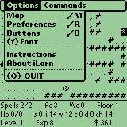
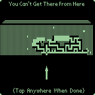
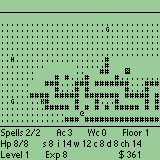
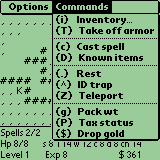
The following menu items can accessed faster by writing the graffiti character that appears in parentheses.
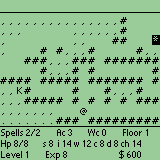
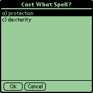
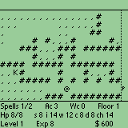
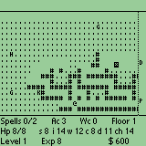
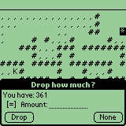
Adventurers tend to collect things. Where do they go? Your pack. How do you do something with them once they are there?
To do something to an item in your inventory, select "Inventory" from the Commands menu (or write "i", lower-case I.) A window will pop up with a list of your inventory. Select any item. This should cause some buttons to appear, labeled with relevant actions. Tap the button of your choice to perform that action.
Rings, amulets, and similar beneficial trinkets will bestow their effects just by being carried in your inventory.
You can wield almost any kind of thing, even if it doesn't make a very good weapon. This is what we like to call a "feature".
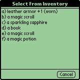
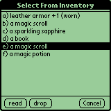
As I mentioned above, there is a Preferences item on the Options menu which will allow you to set various things, including the size of those "what am I doing when I tap somewhere" circles.
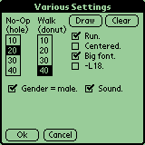
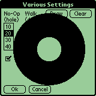
When you have changed the numbers, you can hit the "Draw" button to display the three areas. It will draw the middle region in black. (The "Clear" button will redraw the preferences screen without the big black donut.)
[insert image]
The preferences screen also allows you to:
This is where you can rebind the hardware buttons, if you so desire. By default, they are not rebound:
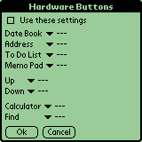
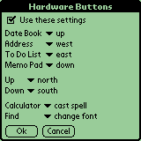
You have the option of rebinding the four application buttons, the up/down scroll buttons, and the silkscreened calculator and find buttons. You can rebind some, all, or none. Once you have made some choices, check the "use these settings" box to turn it on. (If you ever want to turn the rebinding off temporarily, all you have to do is uncheck the box. iLarn will remember your settings but won't use them.) There's an example above in case you're not feeling very creative.
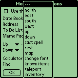
You have a fixed set of choices for each button: n/e/s/w movement, up/down movement, casting a spell, resting for a turn, bringing up the map of the level, changing the font size, listing the 'known items', attempting to teleport, or bringing up the 'inventory' dialogs. (The dashed choice you see at the top is "don't rebind this button", i.e. let the button do whatever it ordinarily would.) Let me know if there is some function you desperately want that does not appear as a choice.
If you have read this far and still haven't decided whether to download the game, you can take a whirlwind tour of the town while you make up your mind. There is a picture of each store and a brief description of how to do things at it.
Want "spoilers" for iLarn? You could eat a lot of fortune cookies
hammers and brains don't mix
or read the source.
What is iLarn?
Current status
Download iLarn
How to play;
town;
keyboard shortcuts
Configuring color
How to get source